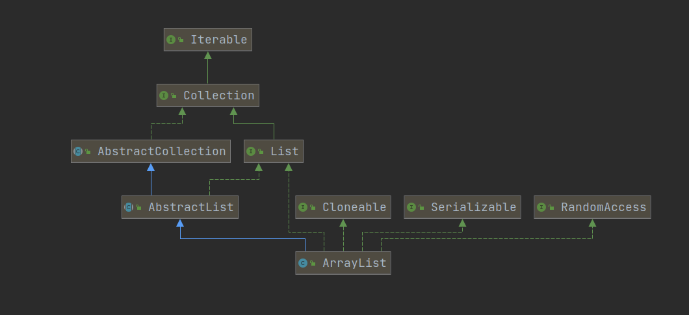

1. 概述 1.1 说明 作者小白一枚, 水平有限, 如有错误还望各位指正.
本文章中源码来自: JDK8 .
1.2 简介 ArrayList 是容量可变的非线程安全列表, 使用数组实现. 适用于查询为主的场景, 提供了增加, 删除, 更改, 遍历的方法.
1.3 继承关系 
RandomAccess: 标记接口, 标记实现该接口的集合使用索引遍历比迭代器更快.
Serializable: 标记接口, 标记实现该接口的类可以序列化 .
Cloneable: 标记接口, 标记实现该接口的类可以调用 clone 方法, 否则会抛出 CloneNotSupportedException (克隆不被支持)异常.
Iterable: 实现此接口允许对象成为 “for-each循环” 语句的目标.
Collection: Java 集合体系的根接口, 重写了 Iterable 接口的 spliterator 方法, 定义了集合基本的待实现方法.
AbstractCollection: 重写了 Conllection 接口中基础的方法, 减少具体集合类的实现成本. 部分方法需要具体集合自我实现, 如 add 方法.
List: 重写了 Collection 接口的 spliterator 方法, 定义了 sort, copyOf, replaceAll, of 方法. 添加了一些待实现方法, 如: addAll, get, set等.
AbstractList: 重写了 List 中的大部分方法, 作用与 AbstractCollection 类似.
2 源码 2.1 字段 1 2 3 4 5 6 7 8 9 10 11 12 13 14 15 16 17 18 19 20 21 22 23 24 25 26 27 28 29 30 31 32 33 private static final long serialVersionUID = 8683452581122892189L ; private static final int DEFAULT_CAPACITY = 10 ; private static final Object[] EMPTY_ELEMENTDATA = {}; private static final Object[] DEFAULTCAPACITY_EMPTY_ELEMENTDATA = {}; transient Object[] elementData; private int size;
2.2 构造方法 1 2 3 4 5 6 7 8 9 10 11 12 13 14 15 16 17 18 19 20 21 22 23 24 25 26 27 28 29 30 31 32 33 34 35 36 37 38 39 40 41 42 43 44 45 46 47 48 49 public ArrayList (int initialCapacity) { if (initialCapacity > 0 ) { this .elementData = new Object [initialCapacity]; } else if (initialCapacity == 0 ) { this .elementData = EMPTY_ELEMENTDATA; } else { throw new IllegalArgumentException ("Illegal Capacity: " + initialCapacity); } } public ArrayList () { this .elementData = DEFAULTCAPACITY_EMPTY_ELEMENTDATA; } public ArrayList (Collection<? extends E> c) { Object[] a = c.toArray(); if ((size = a.length) != 0 ) { if (c.getClass() == ArrayList.class) { elementData = a; } else { elementData = Arrays.copyOf(a, size, Object[].class); } } else { elementData = EMPTY_ELEMENTDATA; } }
2.3 添加 2.3.1 添加单个元素 1 2 3 4 5 6 7 8 9 10 11 12 13 14 15 16 17 18 19 20 21 22 23 24 25 26 27 28 29 30 31 32 33 34 35 36 37 38 39 40 41 42 43 44 45 46 47 48 49 50 51 52 53 54 55 56 57 58 59 60 61 62 63 64 65 66 67 68 69 70 71 72 73 74 75 76 77 78 79 80 81 82 83 84 85 86 87 88 89 public boolean add (E e) { ensureCapacityInternal(size + 1 ); elementData[size++] = e; return true ; } public void add (int index, E element) { rangeCheckForAdd(index); ensureCapacityInternal(size + 1 ); System.arraycopy(elementData, index, elementData, index + 1 , size - index); elementData[index] = element; size++; } private static int calculateCapacity (Object[] elementData, int minCapacity) { if (elementData == DEFAULTCAPACITY_EMPTY_ELEMENTDATA) { return Math.max(DEFAULT_CAPACITY, minCapacity); } return minCapacity; } private void ensureCapacityInternal (int minCapacity) { ensureExplicitCapacity(calculateCapacity(elementData, minCapacity)); } private void ensureExplicitCapacity (int minCapacity) { modCount++; if (minCapacity - elementData.length > 0 ) grow(minCapacity); } private static final int MAX_ARRAY_SIZE = Integer.MAX_VALUE - 8 ; private void grow (int minCapacity) { int oldCapacity = elementData.length; int newCapacity = oldCapacity + (oldCapacity >> 1 ); if (newCapacity - minCapacity < 0 ) newCapacity = minCapacity; if (newCapacity - MAX_ARRAY_SIZE > 0 ) newCapacity = hugeCapacity(minCapacity); elementData = Arrays.copyOf(elementData, newCapacity); } private static int hugeCapacity (int minCapacity) { if (minCapacity < 0 ) throw new OutOfMemoryError (); return (minCapacity > MAX_ARRAY_SIZE) ? Integer.MAX_VALUE : MAX_ARRAY_SIZE; }
2.3.2 批量添加 1 2 3 4 5 6 7 8 9 10 11 12 13 14 15 16 17 18 19 20 21 22 23 24 25 26 27 28 29 30 31 32 33 34 35 36 37 38 39 40 41 42 43 44 public boolean addAll (Collection<? extends E> c) { Object[] a = c.toArray(); int numNew = a.length; ensureCapacityInternal(size + numNew); System.arraycopy(a, 0 , elementData, size, numNew); size += numNew; return numNew != 0 ; } public boolean addAll (int index, Collection<? extends E> c) { rangeCheckForAdd(index); Object[] a = c.toArray(); int numNew = a.length; ensureCapacityInternal(size + numNew); int numMoved = size - index; if (numMoved > 0 ) System.arraycopy(elementData, index, elementData, index + numNew, numMoved); System.arraycopy(a, 0 , elementData, index, numNew); size += numNew; return numNew != 0 ; } private void rangeCheckForAdd (int index) { if (index > size || index < 0 ) throw new IndexOutOfBoundsException (outOfBoundsMsg(index)); }
2.4 删除 2.4.1 删除单个元素 1 2 3 4 5 6 7 8 9 10 11 12 13 14 15 16 17 18 19 20 21 22 23 24 25 26 27 28 29 30 31 32 33 34 35 36 37 38 39 40 41 42 43 44 45 46 47 48 49 50 51 52 53 54 55 56 57 58 59 60 61 62 63 64 65 66 67 68 69 70 71 72 73 74 75 76 77 78 public E remove (int index) { rangeCheck(index); modCount++; E oldValue = elementData(index); int numMoved = size - index - 1 ; if (numMoved > 0 ) System.arraycopy(elementData, index+1 , elementData, index, numMoved); elementData[--size] = null ; return oldValue; } private void rangeCheck (int index) { if (index >= size) throw new IndexOutOfBoundsException (outOfBoundsMsg(index)); } public boolean remove (Object o) { if (o == null ) { for (int index = 0 ; index < size; index++) if (elementData[index] == null ) { fastRemove(index); return true ; } } else { for (int index = 0 ; index < size; index++) if (o.equals(elementData[index])) { fastRemove(index); return true ; } } return false ; } private void fastRemove (int index) { modCount++; int numMoved = size - index - 1 ; if (numMoved > 0 ) System.arraycopy(elementData, index+1 , elementData, index, numMoved); elementData[--size] = null ; }
2.4.2 批量操作 1 2 3 4 5 6 7 8 9 10 11 12 13 14 15 16 17 18 19 20 21 22 23 24 25 26 27 28 29 30 31 32 33 34 35 36 37 38 39 40 41 42 43 44 45 46 47 48 49 50 51 52 53 54 55 56 57 58 59 60 61 62 63 64 65 66 67 68 69 70 71 72 73 74 75 76 77 78 79 80 81 82 83 84 85 86 87 88 89 90 91 92 93 94 95 96 97 98 protected void removeRange (int fromIndex, int toIndex) { modCount++; int numMoved = size - toIndex; System.arraycopy(elementData, toIndex, elementData, fromIndex, numMoved); int newSize = size - (toIndex-fromIndex); for (int i = newSize; i < size; i++) { elementData[i] = null ; } size = newSize; } public boolean removeAll (Collection<?> c) { Objects.requireNonNull(c); return batchRemove(c, false ); } public boolean retainAll (Collection<?> c) { Objects.requireNonNull(c); return batchRemove(c, true ); } private boolean batchRemove (Collection<?> c, boolean complement) { final Object[] elementData = this .elementData; int r = 0 , w = 0 ; boolean modified = false ; try { for (; r < size; r++) if (c.contains(elementData[r]) == complement) elementData[w++] = elementData[r]; } finally { if (r != size) { System.arraycopy(elementData, r, elementData, w, size - r); w += size - r; } if (w != size) { for (int i = w; i < size; i++) elementData[i] = null ; modCount += size - w; size = w; modified = true ; } } return modified; } public void clear () { modCount++; for (int i = 0 ; i < size; i++) elementData[i] = null ; size = 0 ; }
2.5 修改 1 2 3 4 5 6 7 8 9 10 11 12 13 14 15 16 17 18 public E set (int index, E element) { rangeCheck(index); E oldValue = elementData(index); elementData[index] = element; return oldValue; }
2.6 查找 1 2 3 4 5 6 7 8 9 10 11 12 13 14 15 16 17 18 19 20 21 22 23 24 25 26 27 28 29 30 31 32 33 34 35 36 37 38 39 40 41 42 43 44 45 46 47 48 49 50 51 52 53 54 55 56 57 58 @SuppressWarnings("unchecked") E elementData (int index) { return (E) elementData[index]; } public E get (int index) { rangeCheck(index); return elementData(index); } public int indexOf (Object o) { if (o == null ) { for (int i = 0 ; i < size; i++) if (elementData[i]==null ) return i; } else { for (int i = 0 ; i < size; i++) if (o.equals(elementData[i])) return i; } return -1 ; } public int lastIndexOf (Object o) { if (o == null ) { for (int i = size-1 ; i >= 0 ; i--) if (elementData[i]==null ) return i; } else { for (int i = size-1 ; i >= 0 ; i--) if (o.equals(elementData[i])) return i; } return -1 ; }
2.7 序列化和反序列化 1 2 3 4 5 6 7 8 9 10 11 12 13 14 15 16 17 18 19 20 21 22 23 24 25 26 27 28 29 30 31 32 33 34 35 36 37 38 39 40 41 42 43 44 45 46 47 48 49 50 51 private void writeObject (java.io.ObjectOutputStream s) throws java.io.IOException{ int expectedModCount = modCount; s.defaultWriteObject(); s.writeInt(size); for (int i=0 ; i<size; i++) { s.writeObject(elementData[i]); } if (modCount != expectedModCount) { throw new ConcurrentModificationException (); } } private void readObject (java.io.ObjectInputStream s) throws java.io.IOException, ClassNotFoundException { elementData = EMPTY_ELEMENTDATA; s.defaultReadObject(); s.readInt(); if (size > 0 ) { int capacity = calculateCapacity(elementData, size); SharedSecrets.getJavaOISAccess().checkArray(s, Object[].class, capacity); ensureCapacityInternal(size); Object[] a = elementData; for (int i=0 ; i<size; i++) { a[i] = s.readObject(); } } }
2.8 其他API 2.8.1 排序 (sort) 1 2 3 4 5 6 7 8 9 10 11 12 13 14 15 16 @Override @SuppressWarnings("unchecked") public void sort (Comparator<? super E> c) { final int expectedModCount = modCount; Arrays.sort((E[]) elementData, 0 , size, c); if (modCount != expectedModCount) { throw new ConcurrentModificationException (); } modCount++; }
2.8.2 转为数组 (toArray) 1 2 3 4 5 6 7 8 9 10 11 12 13 14 15 16 17 18 19 20 21 22 23 24 25 26 27 28 29 30 31 32 33 34 35 public Object[] toArray() { return Arrays.copyOf(elementData, size); } @SuppressWarnings("unchecked") public <T> T[] toArray(T[] a) { if (a.length < size) return (T[]) Arrays.copyOf(elementData, size, a.getClass()); System.arraycopy(elementData, 0 , a, 0 , size); if (a.length > size) a[size] = null ; return a; }
2.8.3 克隆 (clone) 1 2 3 4 5 6 7 8 9 10 11 12 13 14 15 16 17 public Object clone () { try { ArrayList<?> v = (ArrayList<?>) super .clone(); v.elementData = Arrays.copyOf(elementData, size); v.modCount = 0 ; return v; } catch (CloneNotSupportedException e) { throw new InternalError (e); } }
2.8.4 subList 1 2 3 4 5 6 7 8 9 10 11 12 public List<E> subList (int fromIndex, int toIndex) { subListRangeCheck(fromIndex, toIndex, size); return new SubList (this , 0 , fromIndex, toIndex); }
2.8.5 遍历方式 ArrayList 可以通过 for, foreach, foreach-lambda, iterator进行遍历.
iterator 又可分为 Iterator 和 ListIterator, 他们分别由内部类 Itr 和 ListItr 实现.
1 2 3 4 5 6 7 8 9 10 11 12 13 14 15 16 17 18 19 20 21 22 23 24 25 26 27 28 29 30 31 32 33 34 35 36 37 38 39 40 41 42 43 44 45 46 47 48 49 50 51 List<String> strList = new ArrayList <String>(4 ); strList.add("1" ); strList.add("2" ); strList.add("3" ); for (int i = 0 ; i < strList.size(); i++) { System.out.println(strList.get(i)); } for (String s : strList) { System.out.println(s); } strList.forEach(System.out::println); Iterator<String> iterator = strList.iterator(); while (iterator.hasNext()){ String str = iterator.next(); System.out.println(str); strList.remove(str); } ListIterator<String> iterator = strList.listIterator(); while (iterator.hasNext()){ System.out.println(iterator.next()); } iterator = strList.listIterator(strList.size()); while (iterator.hasPrevious()){ System.out.println(iterator.previous()); iterator.remove(); } Spliterator<String> spliterator = strList.spliterator(); Spliterator<String> otherSpliterator = spliterator.trySplit(); spliterator.forEachRemaining(System.out::println); otherSpliterator.forEachRemaining(System.out::println);
3. 一些问题 3.1 elementData 为什么用 transient 修饰? transient 用来表示一个域不是该对象序列化的一部分, 当一个对象被序列化的时候, transient 修饰的变量的值是不包括在序列化的表示中的.
但是 ArrayList 又是可序列化的类, elementData 是 ArrayList 具体存放元素的成员, 用 transient 修饰岂不是无法正确序列化, 反序列化了?
其实ArrayList 是通过 writeObject 和 readObject 实现序列化和反序列化.
ArrayList 在序列化的时候会调用 writeObject, 将 size 和 elementData 写入 java.io.ObjectOutputStream; 反序列化时再调用 readObject 从 java.io.ObjectOutputStream 获取 size 和 element, 再恢复到 elementData.
为什么不直接对 elementData 序列化呢?
我们知道 elementData 的大小是动态变化的, 绝大多数时候 elementData 的大小要比它存的数据要多, 也就是说 elementData 里面有空数据, 序列化时我们当然不想将这些空数据序列化, 因此 ArrayList 采用了上述的方法序列化, 而不是直接序列化 elementData.
3.2 elementData 为什么是 Object 而不是泛型 E?
Java 中泛型的运用的目的是实现对象的重用, 泛型 T 和 Object 类在编写时没有太区别, 只是 JVM 中没有 T 的概念, T 只是存在于编程写时, 进入 JVM 运行时, JVM 会对泛型进行擦除, 也就是替换 T 为第一个限定的类型, 如果没有限定类型就会替换为 Object.
Object 可以实例化, 泛型不能实例化.
从反射方面来说, 返回一个泛型的实例时, 不需要经过强制转换, Object 则需要强制转换.
3.3 modCount 的作用 modCount 继承于父类 AbstractList, 源码如下:
1 2 3 4 5 6 7 8 9 10 11 12 13 14 15 16 17 18 19 20 21 22 23 24 25 26 27 protected transient int modCount = 0 ;
modCount 是记录此列表结构修改的次数 . 结构修改是指那些改变列表大小的修改, 或者以某种方式扰乱列表, 使得正在进行的迭代可能产生不正确的结果. 此字段由迭代器和 listiterator 方法返回的迭代器和列表迭代器实现使用. 如果此字段的值意外更改, 迭代器会抛出 ConcurrentModificationException 响应next, remove, previous, set 或者 add操作. 提供了快速失败的行为, 而不是在迭代过程中面对并发修改的不确定性行为.
原理:
迭代器将此刻的 modCount 记录下来, 迭代器进行相关操作时查看现在的 modCount 和记录下来的值是否一致, 如果不一致说明发生了并发修改, 抛出异常.
具体实现:
调用 list.iterator() 时返回一个 ArrayList 的内部类 Itr.
1 2 3 4 5 6 7 8 9 10 11 12 13 14 15 16 17 18 19 20 21 22 23 24 25 26 27 28 29 30 31 32 33 34 35 36 37 38 39 40 41 42 43 44 45 46 47 48 49 50 51 52 53 54 55 56 57 58 59 60 61 62 63 64 65 66 67 68 69 70 71 72 73 74 75 76 77 78 79 80 public Iterator<E> iterator () { return new Itr (); } private class Itr implements Iterator <E> { int cursor; int lastRet = -1 ; int expectedModCount = modCount; Itr() {} public boolean hasNext () { return cursor != size; } @SuppressWarnings("unchecked") public E next () { checkForComodification(); int i = cursor; if (i >= size) throw new NoSuchElementException (); Object[] elementData = ArrayList.this .elementData; if (i >= elementData.length) throw new ConcurrentModificationException (); cursor = i + 1 ; return (E) elementData[lastRet = i]; } public void remove () { if (lastRet < 0 ) throw new IllegalStateException (); checkForComodification(); try { ArrayList.this .remove(lastRet); cursor = lastRet; lastRet = -1 ; expectedModCount = modCount; } catch (IndexOutOfBoundsException ex) { throw new ConcurrentModificationException (); } } @Override @SuppressWarnings("unchecked") public void forEachRemaining (Consumer<? super E> consumer) { Objects.requireNonNull(consumer); final int size = ArrayList.this .size; int i = cursor; if (i >= size) { return ; } final Object[] elementData = ArrayList.this .elementData; if (i >= elementData.length) { throw new ConcurrentModificationException (); } while (i != size && modCount == expectedModCount) { consumer.accept((E) elementData[i++]); } cursor = i; lastRet = i - 1 ; checkForComodification(); } final void checkForComodification () { if (modCount != expectedModCount) throw new ConcurrentModificationException (); } }
expectedModCount 的初始值为 modCount (记录当前的修改次数)
hasNext的判断条件为: cursor!=size 当前迭代的位置不是最大容量返回 true.
next 和 remove 操作之前都会检查 expectedModCount 和 modCount 是否相等, 不相等会抛出 ConcurrentModificationException.
如果没有这步操作, 可能会抛出 ArrayIndexOutOfBoundsException 异常(迭代时列表被并发删除了部分数据).
3.4 为什么 hugeCapacity() 会返回 Integer.MAX_VALUE? MAX_ARRAY_SIZE 不是 Integer.MAX_VALUE - 8 吗, 为什么 hugeCapacity() 还返回 Integer.MAX_VALUE?
前文提到: MAX_ARRAY_SIZE = Integer.MAX_VALUE - 8 是因为部分虚拟机在数组中保存 header word 头部字占用 8 个空间. 在这些虚拟机中分配大于IMAX_ARRAY_SIZE 的空间会导致 OOM, 而在其他的虚拟机中则可以正常扩容.
而 gorw 方法要确保至少可以容纳 minCapacity 个元素. 又因为 newCapacity > MAX_ARRAY_SIZE, 因此只能将列表扩容到 Integer.MAX_VALUE.
3.5 retainAll 和 removeall中 ,modCount 为什么加 size - w 其他结构性修改操作中, modCount 的值都是 + 1, 为什么在 retainAll 和 removeAll 中加的却是 size - w?
因为 modCount 只是记录结构修改的次数 ,加 1 和加 size - w 区别不大?
如果有大佬知道原因还望告知.